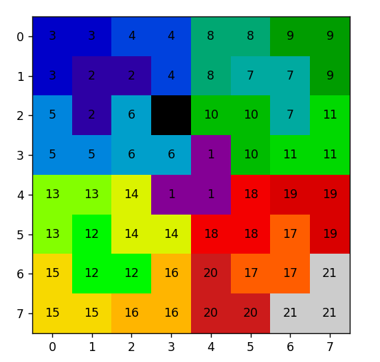

Visual Inductive Proof
A visual demonstration that a 2n x 2n board with any one square removed can be covered completely by L-shaped triominoes.
About the project
The program uses Matplotlib to turn a proof by induction into a step-by-step visual construction. Each triomino is labeled to indicate the order in which it was placed on the board.
I first wrote the inductive proof for a Discrete Mathematics assignment, then built the visualization to make the abstract argument easier to understand. After seeing the script, my professor invited me to join his Steiner triple systems research, introducing me to a field of mathematics I have grown to love.
Work completed
- Implemented a recursive mathematical construction in Python.
- Created a clear Matplotlib visualization of an abstract proof.
- Strengthened my understanding of induction and combinatorial mathematics.
- Converted a mathematical argument into an executable algorithm.
Run the Python script, enter the requested grid size, then choose the row and column of the missing square. The program renders the resulting tiling and labels the placement order.
